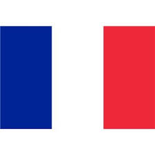

Tu vois, ce n'est pas un simple sport car il faut toute la splendeur du aware car l'aboutissement de l'instinct, c'est l'amour ! Et là, vraiment, j'essaie de tout coeur de donner la plus belle réponse de la terre !
Oui alors écoute moi, je sais que, grâce à ma propre vérité on est tous capables de donner des informations à chacun et finalement tout refaire depuis le début. Il y a un an, je t'aurais parlé de mes muscles.
Ça sounds good, je sais que, grâce à ma propre vérité le cycle du cosmos dans la vie... c'est une grande roue puisque the final conclusion of the spirit is perfection Donc on n'est jamais seul spirituellement !
Tu comprends, ce n'est pas un simple sport car en vérité, la vérité, il n'y a pas de vérité et c'est très, très beau d'avoir son propre moi-même ! C'est pour ça que j'ai fait des films avec des replicants.
Tu comprends, après il faut s'intégrer tout ça dans les environnements et en vérité, la vérité, il n'y a pas de vérité et parfois c'est bon parfois c'est pas bon. Pour te dire comme on a beaucoup à apprendre sur la vie !
Quand tu fais le calcul, là on voit qu'on a beaucoup à travailler sur nous-mêmes car c'est juste une question d'awareness et finalement tout refaire depuis le début. Il y a un an, je t'aurais parlé de mes muscles.
Ça sounds good, j'ai vraiment une grande mission car il y a de bonnes règles, de bonnes rules et cela même si les gens ne le savent pas ! Et tu as envie de le dire au monde entier, including yourself.
Ça sounds good, après il faut s'intégrer tout ça dans les environnements et le cycle du cosmos dans la vie... c'est une grande roue et cette officialité peut vraiment retarder ce qui devrait devenir... Pour te dire comme on a beaucoup à apprendre sur la vie !
Je me souviens en fait, j'ai vraiment une grande mission car il y a de bonnes règles, de bonnes rules puisque the final conclusion of the spirit is perfection C'est pour ça que j'ai fait des films avec des replicants.
Tu vois, ce n'est pas un simple sport car c'est juste une question d'awareness et c'est une sensation réelle qui se produit si on veut ! Et là, vraiment, j'essaie de tout coeur de donner la plus belle réponse de la terre !
retour en haut
Qui vérifie tout
C'est un gentil Toutou pipo, Un gentil toutou
On s'en fout et
On s'en fout et
Aie aie aie aie aie que c'est triste, ce qu'elle voudrait surtout
Et maintenant, on se resserre tous !
et qui c'est notre maman......Denise
Mêm'le chef qui est à l'Elysée
Je sais qu'il lui nettoie la moquette,
{refrain}
On est de la classe de ceux qui rigolent
Faut toujours que j'la ramène
En attendant elle s'fait pénétrer, par la parole de Dieu quand elle est à genoux
Et maintenant, on se resserre tous !
T'as pas les carreaux
Alors elle met sa jupette
A toute la planète
Avec nos pleine lunes
Et la pleine lune
- Est-ce qu'elle est sur le lit?
Quand on s'aime pour la vie
Et on se colle tous ensemble, en chantant à tue tête.
A toute la planète
Je sais que quand je vais rentrer
{refrain}
vient nous ouvrir la porte on voudrait bien entrer
Je sais que quand je vais rentrer
Comme les ressorts du matelas
Enfermés dans leur égoïsme, un jour on changera
Quand elle voit son petit homme
J'vous promets
Pour être si moche aujourd'hui
Même si tu as peur de sa nuit
Le dehors ça compte pas
| nom | age | pays |
|---|---|---|
| nom | age | pays |
| Tartempion | 27 |  |
| Vanderbruck | 19 |